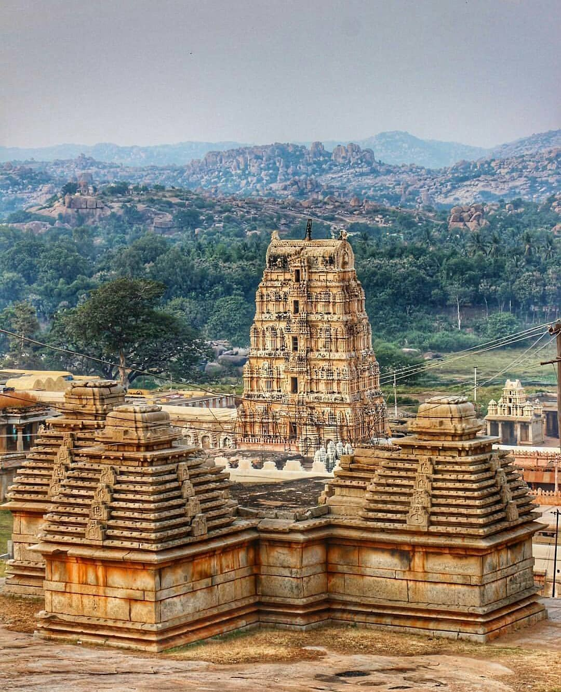

Taj Mahal
One of the Seven Wonders of the World, this white marble mausoleum in Agra is a symbol of love.

Amber Fort
Located in Jaipur, Rajasthan, Amber Fort showcases magnificent Rajasthani architecture.

Hampi
A UNESCO World Heritage Site, Hampi is known for its stunning ruins and history of the Vijayanagara Empire.

Meenakshi Temple
Meenakshi Temple, located in Madurai, is renowned for its stunning Dravidian architecture and vibrant sculptures.

Konark Sun Temple
A 13th-century marvel in Odisha, the Konark Sun Temple is dedicated to the Sun God and built in the shape of a chariot.